LIVE
18h, Douala.
Mama Rose passe en live.
Personne ne la trouve.
Live
Le marché,
en direct.
en direct.
Son pays.
Son rayon.
Photo et lien.
Envoyé.
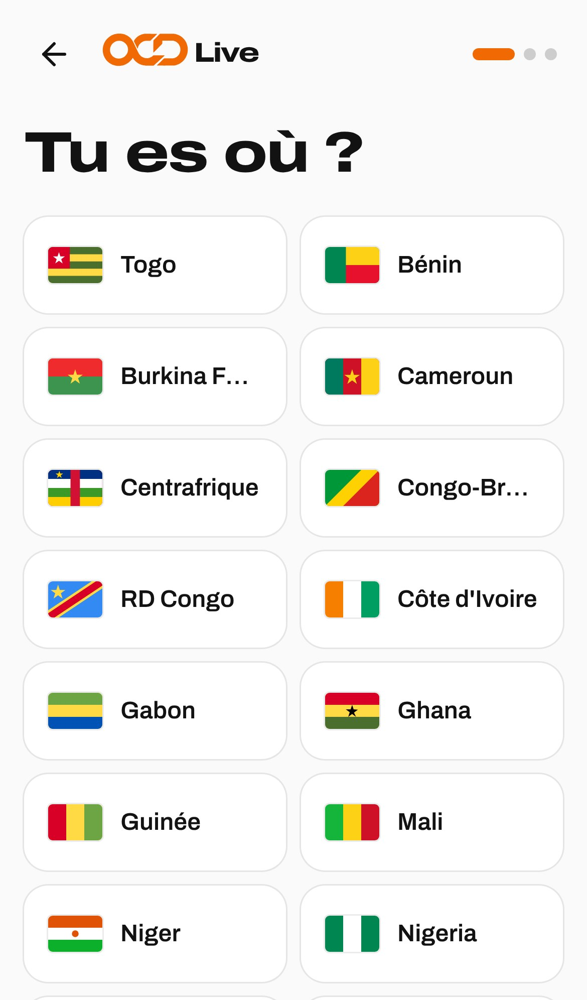
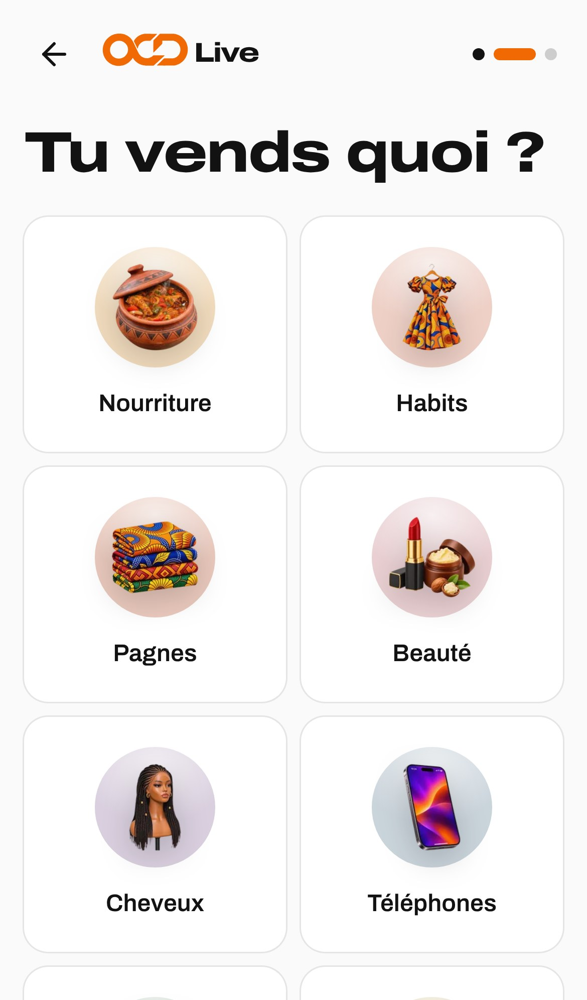
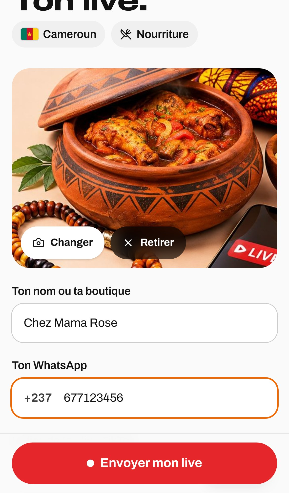

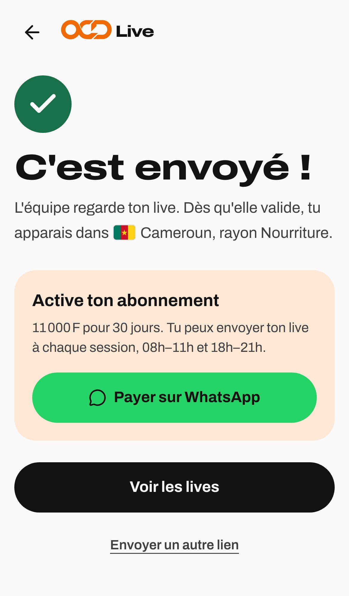
L'équipe valide.

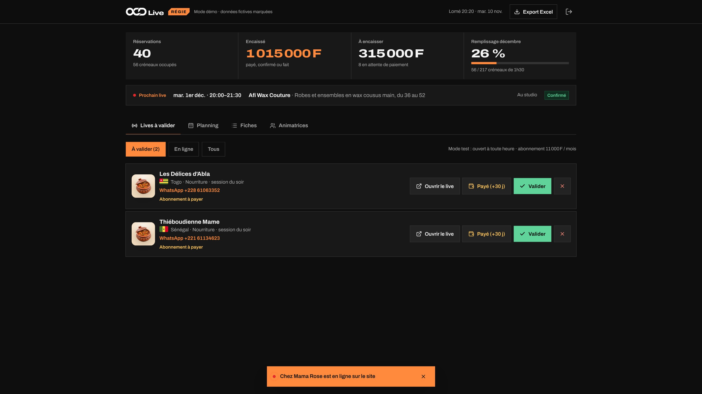
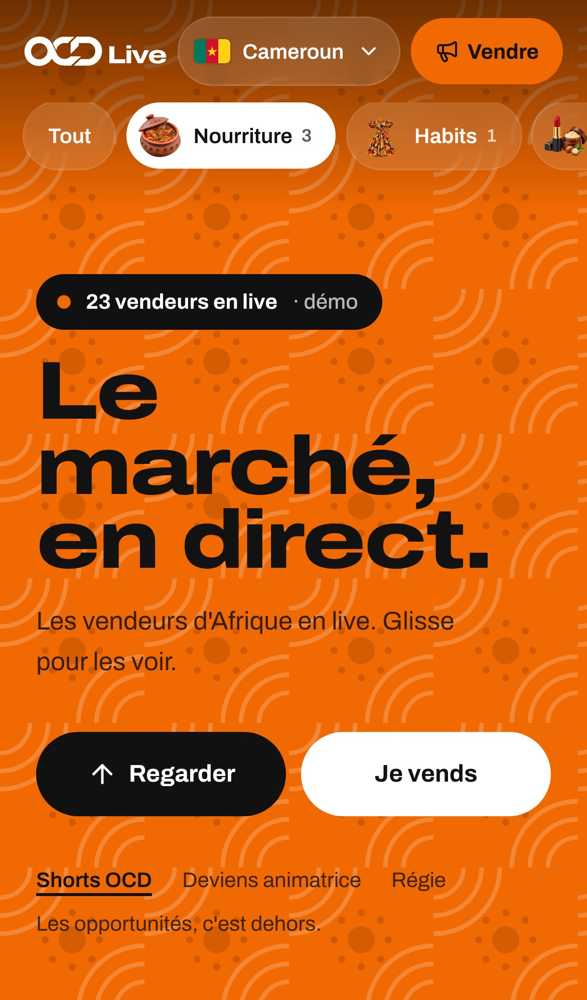

Le Cameroun la voit.
Téléphone et ordinateur.
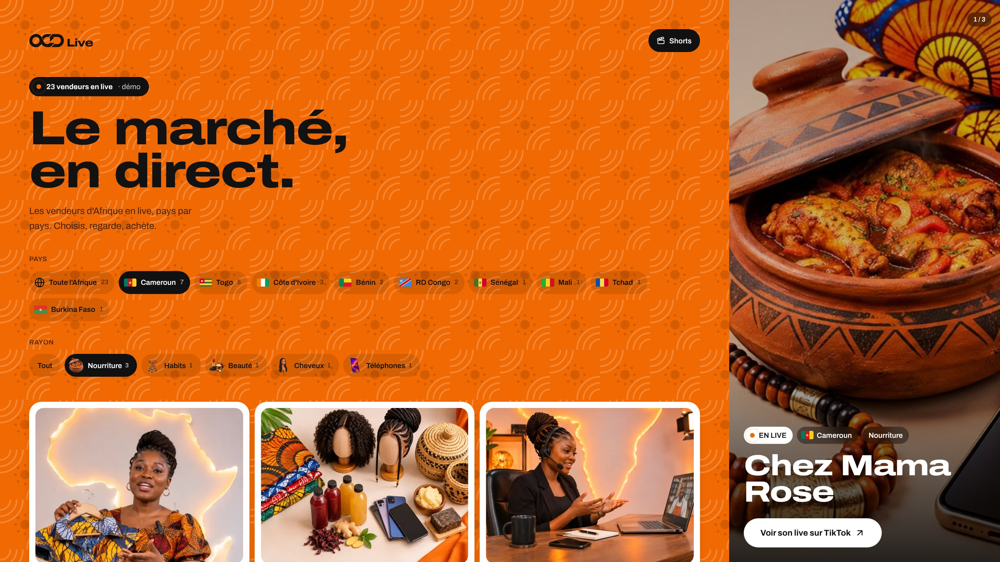
Ou réserve le studio.
Paie en Mobile Money.
Garde ton reçu.


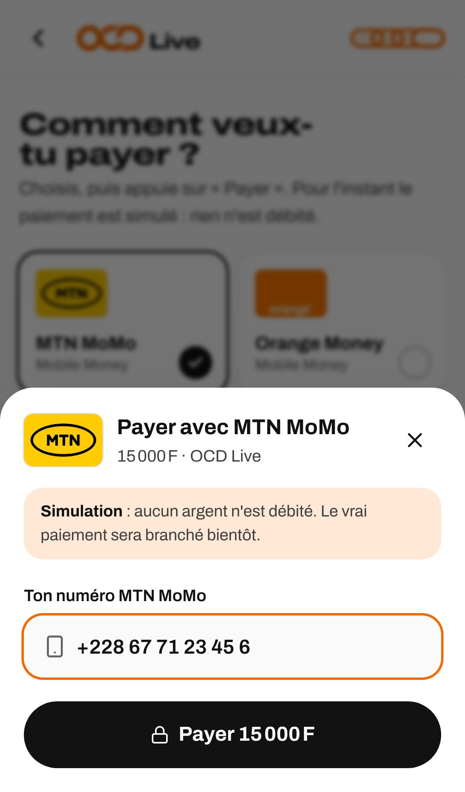
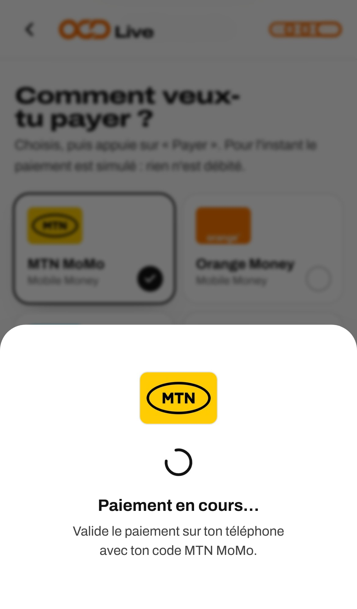
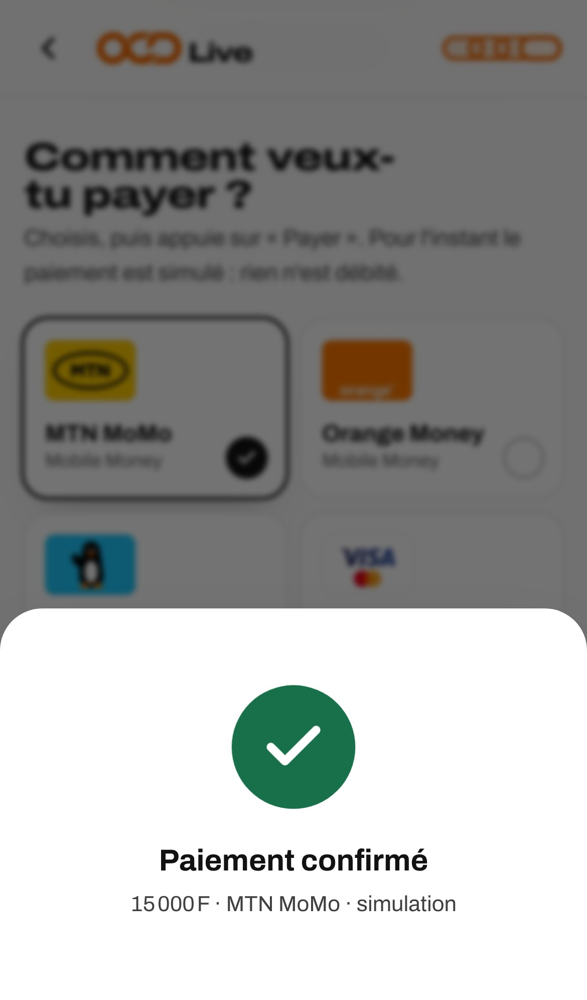
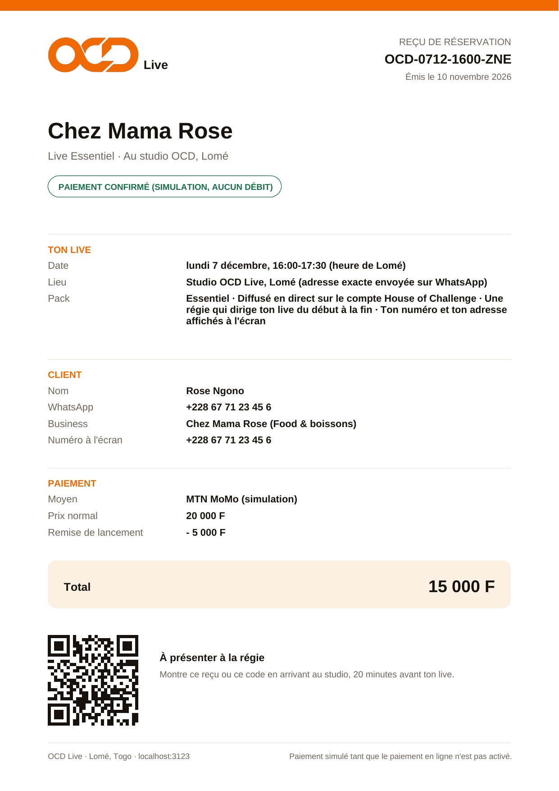
Ton pays
te voit vendre.
te voit vendre.
Live
ocd-pi.vercel.app
Les opportunités, c'est dehors.